2026 Higher Mathematics - Paper 2 marking instructions
Source: Scottish Qualifications Authority (SQA) / Qualifications Scotland. This is a StemInteract HTML companion, not an official HTML edition. Selectable text is supplied alongside original page images. Use the images or original PDF for equations, powers, fractions, vector notation, tables and diagrams; text extraction cannot fully preserve mathematical layout.
Jump to a question
PDF page 1
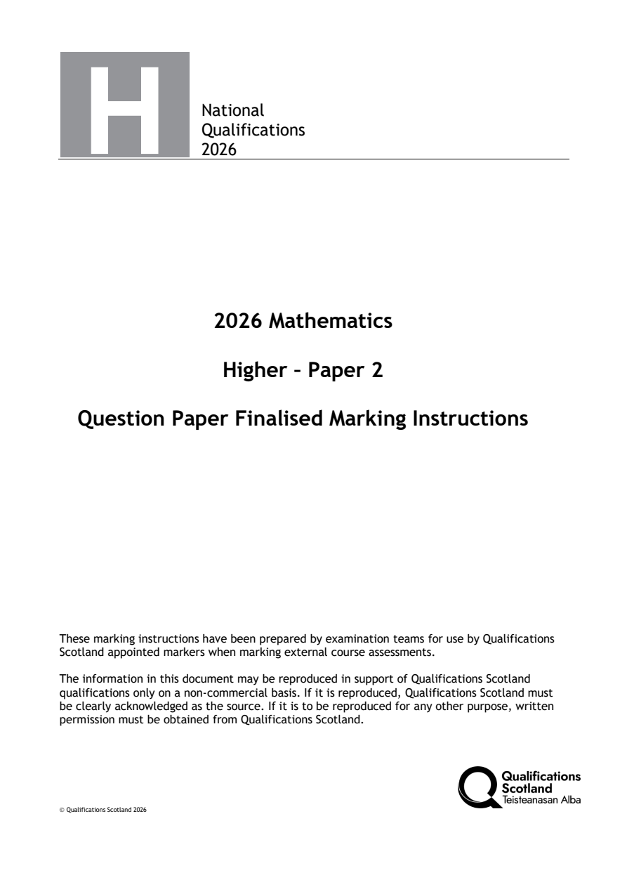
Selectable page text
National
Qualifications
2026
2026 Mathematics
Higher – Paper 2
Question Paper Finalised Marking Instructions
These marking instructions have been prepared by examination teams for use by Qualifications
Scotland appointed markers when marking external course assessments.
The information in this document may be reproduced in support of Qualifications Scotland
qualifications only on a non-commercial basis. If it is reproduced, Qualifications Scotland must
be clearly acknowledged as the source. If it is to be reproduced for any other purpose, written
permission must be obtained from Qualifications Scotland.
© Qualifications Scotland 2026PDF page 2
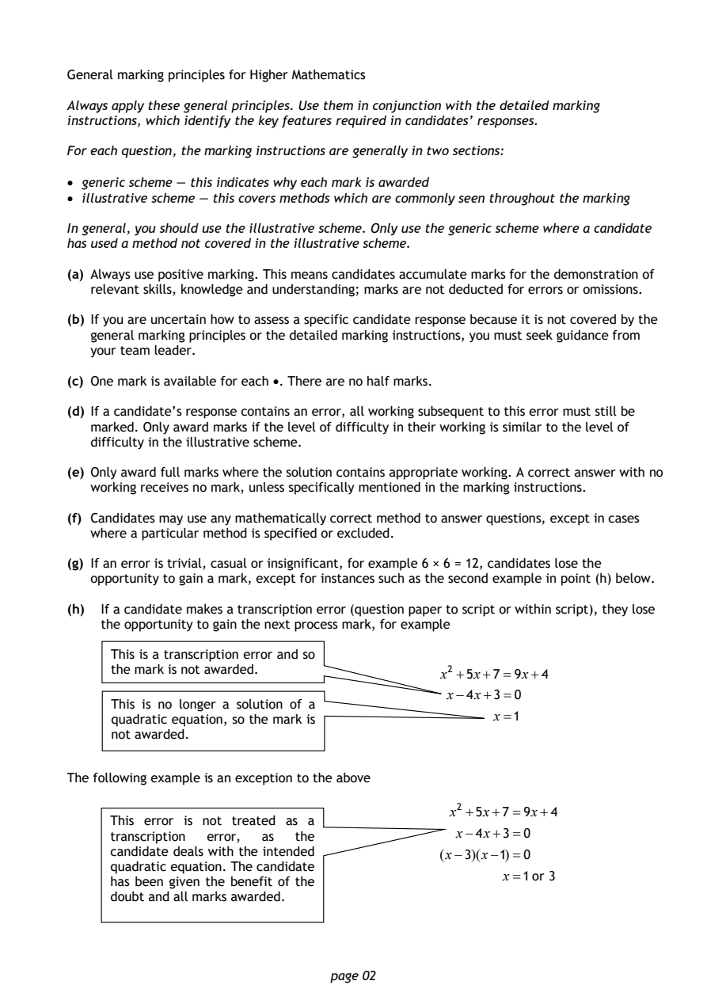
Selectable page text
General marking principles for Higher Mathematics
Always apply these general principles. Use them in conjunction with the detailed marking
instructions, which identify the key features required in candidates’ responses.
For each question, the marking instructions are generally in two sections:
• generic scheme — this indicates why each mark is awarded
• illustrative scheme — this covers methods which are commonly seen throughout the marking
In general, you should use the illustrative scheme. Only use the generic scheme where a candidate
has used a method not covered in the illustrative scheme.
(a) Always use positive marking. This means candidates accumulate marks for the demonstration of
relevant skills, knowledge and understanding; marks are not deducted for errors or omissions.
(b) If you are uncertain how to assess a specific candidate response because it is not covered by the
general marking principles or the detailed marking instructions, you must seek guidance from
your team leader.
(c) One mark is available for each •. There are no half marks.
(d) If a candidate’s response contains an error, all working subsequent to this error must still be
marked. Only award marks if the level of difficulty in their working is similar to the level of
difficulty in the illustrative scheme.
(e) Only award full marks where the solution contains appropriate working. A correct answer with no
working receives no mark, unless specifically mentioned in the marking instructions.
(f) Candidates may use any mathematically correct method to answer questions, except in cases
where a particular method is specified or excluded.
(g) If an error is trivial, casual or insignificant, for example 6 × 6 = 12, candidates lose the
opportunity to gain a mark, except for instances such as the second example in point (h) below.
(h) If a candidate makes a transcription error (question paper to script or within script), they lose
the opportunity to gain the next process mark, for example
This is a transcription error and so
the mark is not awarded.
x² +5x+7 =9x+4
x−4x+3=0
This is no longer a solution of a
quadratic equation, so the mark is x=1
not awarded.
The following example is an exception to the above
x² +5x+7 =9x+4
This error is not treated as a
transcription error, as the
x−4x+3=0
candidate deals with the intended (x−3)(x−1)=0
quadratic equation. The candidate
x=1 or 3
has been given the benefit of the
doubt and all marks awarded.
page 02PDF page 3
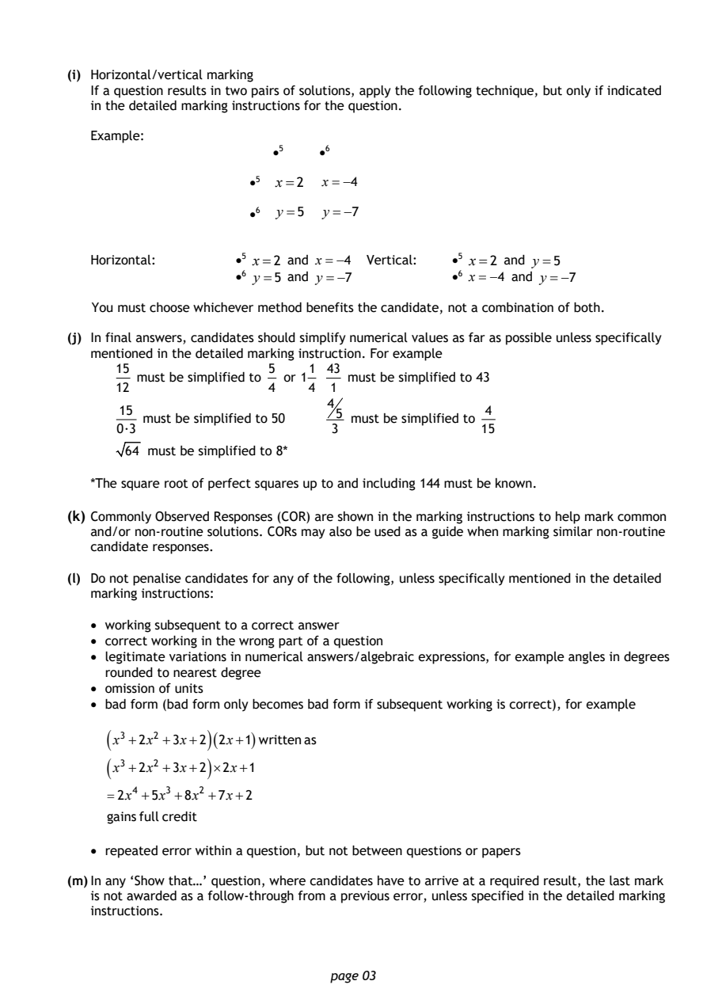
Selectable page text
(i) Horizontal/vertical marking
If a question results in two pairs of solutions, apply the following technique, but only if indicated
in the detailed marking instructions for the question.
Example:
•5 •6
•5 x=2 x =−4
•6 y=5 y=−7
Horizontal: •5 x=2 and x =−4 Vertical: •5 x=2 and y=5
•6 y=5 and y=−7 •6 x =−4 and y=−7
You must choose whichever method benefits the candidate, not a combination of both.
(j) In final answers, candidates should simplify numerical values as far as possible unless specifically
mentioned in the detailed marking instruction. For example
15 5 1 43
must be simplified to or 1 must be simplified to 43
12 4 4 1
4
15 5 4
must be simplified to 50 must be simplified to
0·3 3 15
64 must be simplified to 8*
*The square root of perfect squares up to and including 144 must be known.
(k) Commonly Observed Responses (COR) are shown in the marking instructions to help mark common
and/or non-routine solutions. CORs may also be used as a guide when marking similar non-routine
candidate responses.
(l) Do not penalise candidates for any of the following, unless specifically mentioned in the detailed
marking instructions:
• working subsequent to a correct answer
• correct working in the wrong part of a question
• legitimate variations in numerical answers/algebraic expressions, for example angles in degrees
rounded to nearest degree
• omission of units
• bad form (bad form only becomes bad form if subsequent working is correct), for example
(
x³ +2x² +3x+2
)(2x+1)
written as
( )
x³ +2x² +3x+2 ×2x+1
=2x⁴ +5x³ +8x² +7x+2
gains full credit
• repeated error within a question, but not between questions or papers
(m) In any ‘Show that…’ question, where candidates have to arrive at a required result, the last mark
is not awarded as a follow-through from a previous error, unless specified in the detailed marking
instructions.
page 03PDF page 4
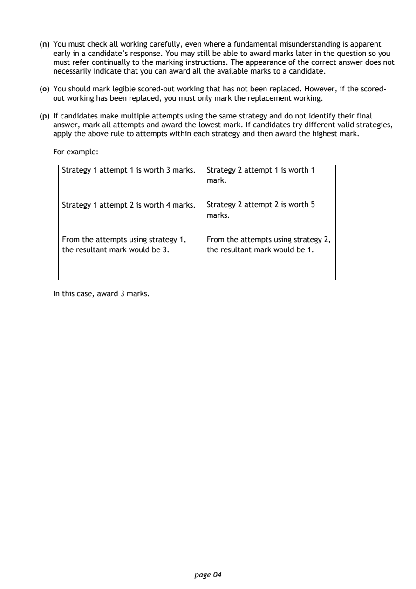
Selectable page text
(n) You must check all working carefully, even where a fundamental misunderstanding is apparent
early in a candidate’s response. You may still be able to award marks later in the question so you
must refer continually to the marking instructions. The appearance of the correct answer does not
necessarily indicate that you can award all the available marks to a candidate.
(o) You should mark legible scored-out working that has not been replaced. However, if the scored-
out working has been replaced, you must only mark the replacement working.
(p) If candidates make multiple attempts using the same strategy and do not identify their final
answer, mark all attempts and award the lowest mark. If candidates try different valid strategies,
apply the above rule to attempts within each strategy and then award the highest mark.
For example:
Strategy 1 attempt 1 is worth 3 marks. Strategy 2 attempt 1 is worth 1
mark.
Strategy 1 attempt 2 is worth 4 marks. Strategy 2 attempt 2 is worth 5
marks.
From the attempts using strategy 1, From the attempts using strategy 2,
the resultant mark would be 3. the resultant mark would be 1.
In this case, award 3 marks.
page 04PDF page 5
Paper 2, Question 1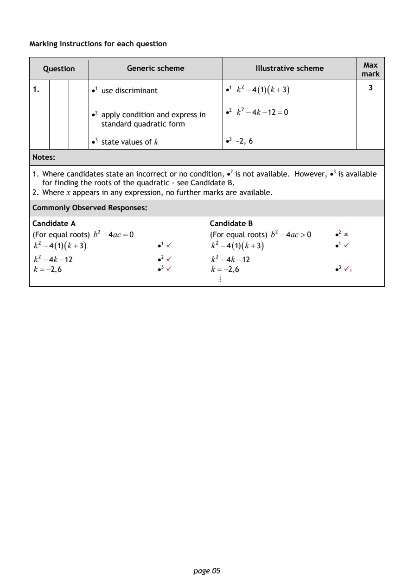
Selectable page text
Marking instructions for each question
Max
Question Generic scheme Illustrative scheme
mark
1. •1 use discriminant •1 k² −4(1)(k+3) 3
•2 apply condition and express in •2 k² −4k−12=0
standard quadratic form
•3 state values of k •3 −2, 6
Notes:
1. Where candidates state an incorrect or no condition, •² is not available. However, •³ is available
for finding the roots of the quadratic - see Candidate B.
2. Where x appears in any expression, no further marks are available.
Commonly Observed Responses:
Candidate A Candidate B
(For equal roots) b² −4ac=0 (For equal roots) b² −4ac>0 •2
k² −4(1)(k+3) •1 ✓ k² −4(1)(k+3) •1 ✓
k² −4k−12 •2 ✓ k² −4k−12
k =−2,6 •3 ✓ k =−2,6 •3 ✓
1
⋮
page 05PDF page 6
Paper 2, Question 2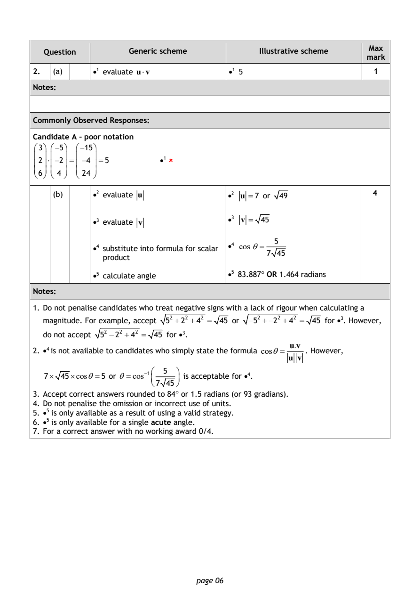
Selectable page text
Max
Question Generic scheme Illustrative scheme
mark
2. (a) •1 evaluate u⋅v •1 5 1
Notes:
Commonly Observed Responses:
Candidate A – poor notation
3 −5 −15
2 ⋅ −2 = −4 =5 •1
6 4 24
(b) •2 evaluate u •2 u =7 or 49 4
•3 evaluate v •3 v = 45
5
•4 substitute into formula for scalar •4 cosθ=
7 45
product
•5 calculate angle •5 83.887° OR 1.464 radians
Notes:
1. Do not penalise candidates who treat negative signs with a lack of rigour when calculating a
magnitude. For example, accept 5² +2² +4² = 45 or −5² +−2² +4² = 45 for •³. However,
do not accept 5² −2² +4² = 45 for •³.
u.v
2. •⁴ is not available to candidates who simply state the formula cosθ= . However,
u v
5
7× 45×cosθ=5 or θ=cos⁻¹ is acceptable for •⁴.
7 45
3. Accept correct answers rounded to 84° or 1.5 radians (or 93 gradians).
4. Do not penalise the omission or incorrect use of units.
5. •⁵ is only available as a result of using a valid strategy.
6. •⁵ is only available for a single acute angle.
7. For a correct answer with no working award 0/4.
page 06PDF page 7
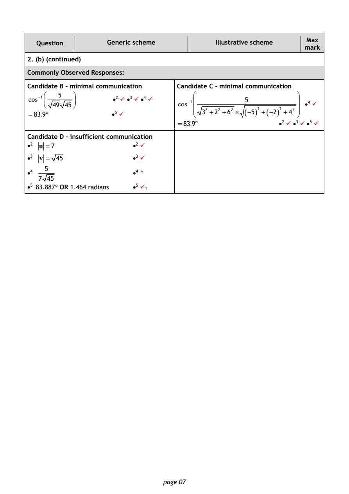
Selectable page text
Max
Question Generic scheme Illustrative scheme
mark
2. (b) (continued)
Commonly Observed Responses:
Candidate B – minimal communication Candidate C – minimal communication
5
cos⁻¹
49 45
•2 ✓ •3 ✓ •4 ✓
cos⁻¹
5
•4 ✓
=83.9° •5 ✓ 3² +2² +6² × (−5)² +(−2)² +4²
=83.9° •2 ✓ •3 ✓ •5 ✓
Candidate D – insufficient communication
•2 u =7 •2 ✓
•3 v = 45 •3 ✓
5
•4 •4 ^
7 45
•5 83.887° OR 1.464 radians •5 ✓
1
page 07PDF page 8
Paper 2, Question 3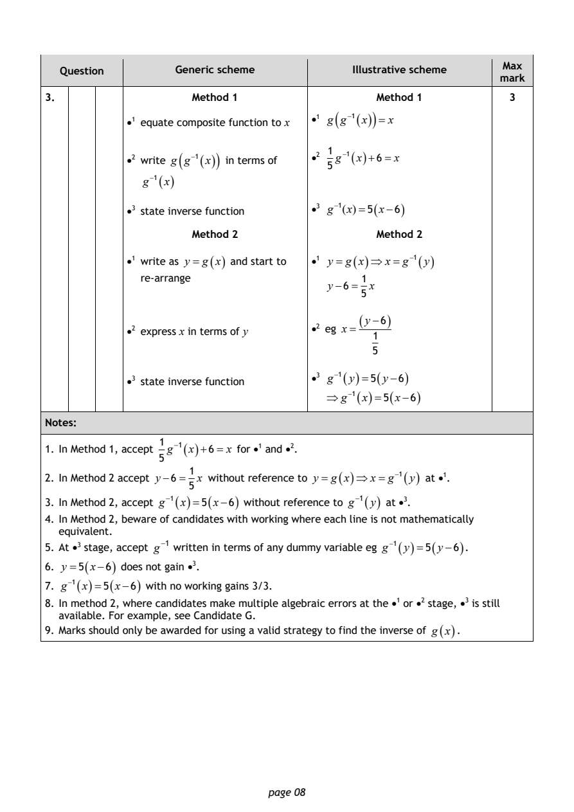
Selectable page text
Max
Question Generic scheme Illustrative scheme
mark
3. Method 1 Method 1 3
•1 equate composite function to x •1 g
( g⁻¹(x))
= x
1
•2 write g ( g⁻¹(x)) in terms of •2 g⁻¹(x)+6= x
5
g⁻¹(x)
•3 state inverse function •3 g⁻¹(x)=5(x−6)
Method 2 Method 2
•1 write as y= g(x) and start to •1 y= g(x)⇒x= g⁻¹(y)
re-arrange 1
y−6= x
5
(y−6)
•2 express x in terms of y •2 eg x=
1
5
•3 state inverse function
•3 g⁻¹(y)=5(y−6)
⇒g⁻¹(x)=5(x−6)
Notes:
1
1. In Method 1, accept g⁻¹(x)+6= x for •¹ and •².
5
1
2. In Method 2 accept y−6= x without reference to y= g(x)⇒x= g⁻¹(y) at •¹.
5
3. In Method 2, accept g⁻¹(x)=5(x−6) without reference to g⁻¹(y) at •³.
4. In Method 2, beware of candidates with working where each line is not mathematically
equivalent.
5. At •³ stage, accept g⁻¹ written in terms of any dummy variable eg g⁻¹(y)=5(y−6).
6. y =5(x−6) does not gain •³.
7. g⁻¹(x)=5(x−6) with no working gains 3/3.
8. In method 2, where candidates make multiple algebraic errors at the •¹ or •² stage, •³ is still
available. For example, see Candidate G.
9. Marks should only be awarded for using a valid strategy to find the inverse of g(x).
page 08PDF page 9
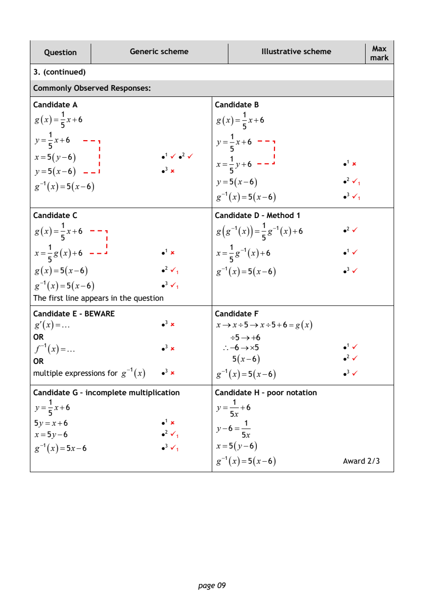
Selectable page text
Max
Question Generic scheme Illustrative scheme
mark
3. (continued)
Commonly Observed Responses:
Candidate A Candidate B
1 1
g(x)= x+6 g(x)= x+6
5 5
1 1
y = x+6 y = x+6
5
5
x=5(y−6) •1 ✓ •2 ✓ 1
x= y+6 •1
y =5(x−6) •3 5
y =5(x−6) •2 ✓
g⁻¹(x)=5(x−6) 1
g⁻¹(x)=5(x−6) •3 ✓
1
Candidate C Candidate D – Method 1
g(x)= 1 x+6 g ( g⁻¹(x)) = 1 g⁻¹(x)+6 •2 ✓
5 5
1 1
x= g(x)+6 •1 x= g⁻¹(x)+6 •1 ✓
5 5
g(x)=5(x−6) •2 ✓ 1 g⁻¹(x)=5(x−6) •3 ✓
g⁻¹(x)=5(x−6) •3 ✓
1
The first line appears in the question
Candidate E - BEWARE Candidate F
g′(x)=… •3 x→x÷5→x÷5+6= g(x)
OR ÷5→+6
f ⁻¹(x)=… •3 ∴−6→×5 •1 ✓
OR
5(x−6) •2 ✓
multiple expressions for g⁻¹(x) •3 g⁻¹(x)=5(x−6) •3 ✓
Candidate G – incomplete multiplication Candidate H – poor notation
1 1
y = x+6 y = +6
5 5x
5y = x+6 •1 1
y−6=
x=5y−6 •2 ✓ 5x
1
g⁻¹(x)=5x−6 •3 ✓
x=5(y−6)
1
g⁻¹(x)=5(x−6) Award 2/3
page 09PDF page 10
Paper 2, Question 4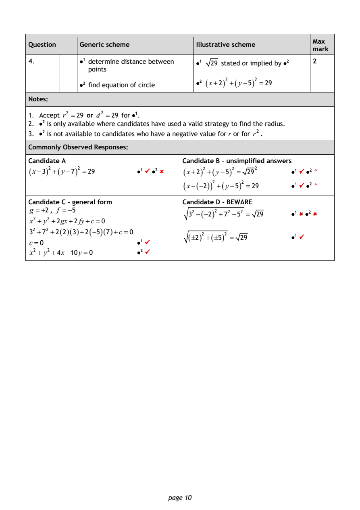
Selectable page text
Max
Question Generic scheme Illustrative scheme
mark
4. •1 determine distance between •1 29 stated or implied by •² 2
points
•2 find equation of circle •2 (x+2)² +(y−5)² =29
Notes:
1. Accept r² =29 or d² =29 for •¹.
2. •² is only available where candidates have used a valid strategy to find the radius.
3. •² is not available to candidates who have a negative value for r or for r².
Commonly Observed Responses:
Candidate A Candidate B – unsimplified answers
(x−3)² +(y−7)² =29 •1 ✓ •2 (x+2)² +(y−5)² = 29² •1 ✓ •2 ^
( x−(−2)) ² +(y−5)² =29 •1 ✓ •2 ^
Candidate C – general form Candidate D - BEWARE
g =+2, f =−5
3² −(−2)² +7² −5² = 29 •1 •2
x² + y² +2gx+2fy+c=0
3² +7² +2(2)(3)+2(−5)(7)+c=0
(±2)² +(±5)² = 29 •1 ✓
c=0 •1 ✓
x² + y² +4x−10y =0 •2 ✓
page 10PDF page 11
Paper 2, Question 5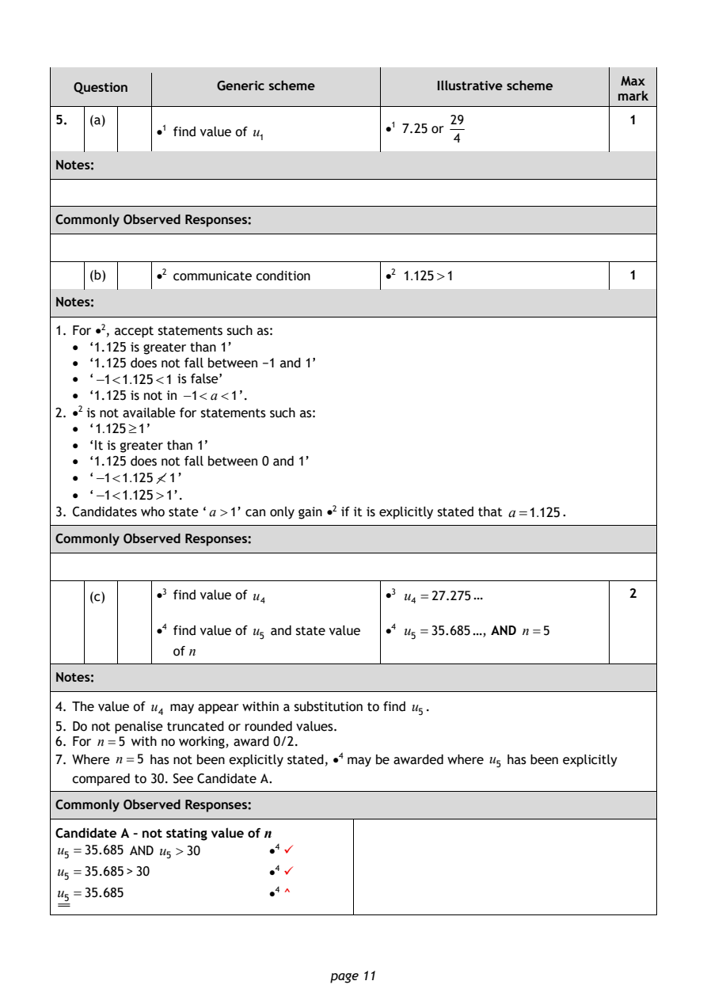
Selectable page text
Max
Question Generic scheme Illustrative scheme
mark
5. (a) 29 1
•1 find value of u₁ •1 7.25 or
4
Notes:
Commonly Observed Responses:
(b) •2 communicate condition •2 1.125>1 1
Notes:
1. For •², accept statements such as:
• ‘1.125 is greater than 1’
• ‘1.125 does not fall between −1 and 1’
• ‘−1<1.125<1 is false’
• ‘1.125 is not in −1<a<1’.
2. •² is not available for statements such as:
• ‘1.125≥1’
• ‘It is greater than 1’
• ‘1.125 does not fall between 0 and 1’
• ‘−1<1.125 < 1’
• ‘−1<1.125>1’.
3. Candidates who state ‘a >1’ can only gain •² if it is explicitly stated that a=1.125.
Commonly Observed Responses:
(c) •3 find value of u₄ •3 u₄ =27.275… 2
•4 find value of u₅ and state value •4 u₅ =35.685…, AND n=5
of n
Notes:
4. The value of u₄ may appear within a substitution to find u₅.
5. Do not penalise truncated or rounded values.
6. For n=5 with no working, award 0/2.
7. Where n=5 has not been explicitly stated, •⁴ may be awarded where u₅ has been explicitly
compared to 30. See Candidate A.
Commonly Observed Responses:
Candidate A – not stating value of n
u₅ =35.685 AND u₅ >30 •4 ✓
u₅ =35.685>30 •4 ✓
u₅ =35.685 •4 ^
page 11PDF page 12
Paper 2, Question 6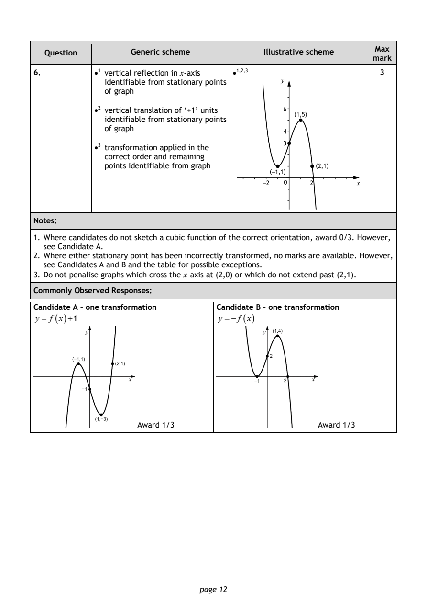
Selectable page text
Max
Question Generic scheme Illustrative scheme
mark
6. •1 vertical reflection in x-axis •1,2,3 3
identifiable from stationary points
of graph
•2 vertical translation of ‘+1’ units
identifiable from stationary points
of graph
•3 transformation applied in the
correct order and remaining
points identifiable from graph
Notes:
1. Where candidates do not sketch a cubic function of the correct orientation, award 0/3. However,
see Candidate A.
2. Where either stationary point has been incorrectly transformed, no marks are available. However,
see Candidates A and B and the table for possible exceptions.
3. Do not penalise graphs which cross the x-axis at (2,0) or which do not extend past (2,1).
Commonly Observed Responses:
Candidate A – one transformation Candidate B – one transformation
y= f (x)+1 y=−f (x)
Award 1/3 Award 1/3
page 12PDF page 13
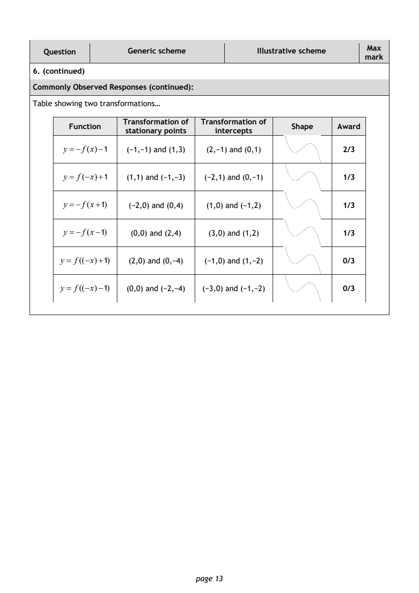
Selectable page text
Max
Question Generic scheme Illustrative scheme
mark
6. (continued)
Commonly Observed Responses (continued):
Table showing two transformations…
Transformation of Transformation of
Function Shape Award
stationary points intercepts
y =−f(x)−1 (−1,−1) and (1,3) (2,−1) and (0,1) 2/3
y = f(−x)+1 (1,1) and (−1,−3) (−2,1) and (0,−1) 1/3
y =−f(x+1) (−2,0) and (0,4) (1,0) and (−1,2) 1/3
y =−f(x−1) (0,0) and (2,4) (3,0) and (1,2) 1/3
y= f((−x)+1) (2,0) and (0,−4) (−1,0) and (1,−2) 0/3
y= f((−x)−1) (0,0) and (−2,−4) (−3,0) and (−1,−2) 0/3
page 13PDF page 14
Paper 2, Question 7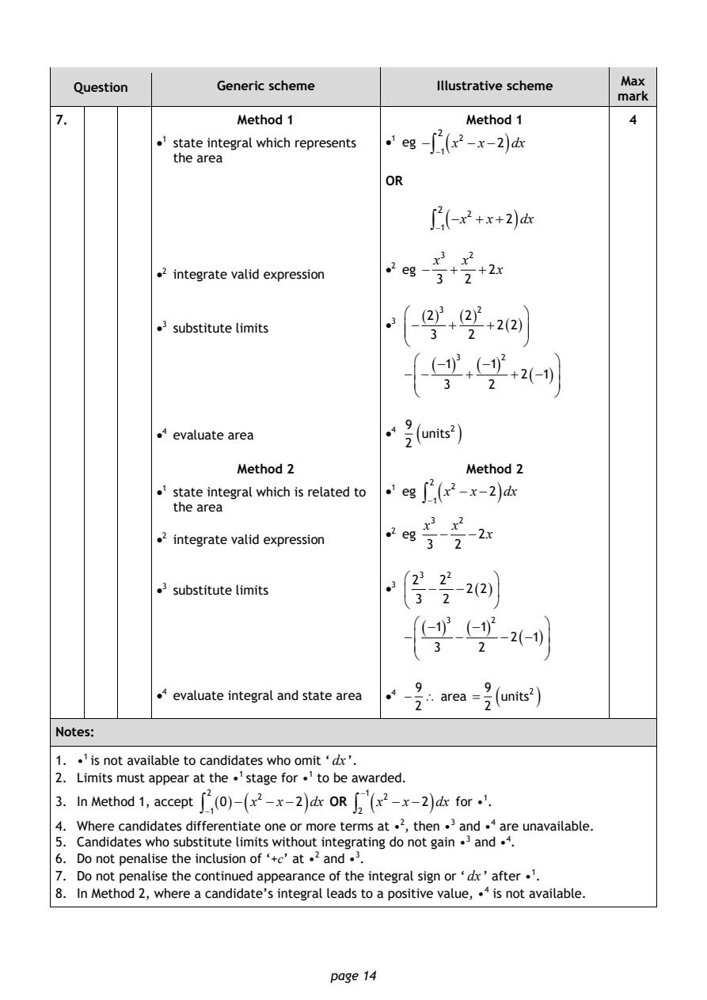
Selectable page text
Max
Question Generic scheme Illustrative scheme
mark
7. Method 1 Method 1 4
2( )
•1 state integral which represents •1 eg −∫₋ x² −x−2 dx
1
the area
OR
2( )
∫ −x² +x+2 dx
−1
x³ x²
•2 eg − + +2x
•2 integrate valid expression
3 2
(2)³ (2)²
•3 substitute limits •3 − 3 + 2 +2(2)
(−1)³ (−1)²
−− + +2(−1)
3 2
9 ( )
•4 evaluate area •4 units²
2
Method 2 Method 2
( )
•1 state integral which is related to •1 eg ∫₋²₁ x² −x−2 dx
the area
x³ x²
•2 integrate valid expression •2 eg − −2x
3 2
2³ 2²
•3 substitute limits •3 − −2(2)
3 2
(−1)³ (−1)²
− − −2(−1)
3 2
9 9 ( )
•4 evaluate integral and state area •4 − ∴ area = units²
2 2
Notes:
1. •1 is not available to candidates who omit ‘dx’.
2. Limits must appear at the •¹ stage for •¹ to be awarded.
( ) ( )
3. In Method 1, accept ∫₋²₁(0)− x² −x−2 dx OR ∫₂⁻¹ x² −x−2 dx for •¹.
4. Where candidates differentiate one or more terms at •², then •³ and •⁴ are unavailable.
5. Candidates who substitute limits without integrating do not gain •³ and •⁴.
6. Do not penalise the inclusion of ‘+c’ at •² and •³.
7. Do not penalise the continued appearance of the integral sign or ‘dx’ after •¹.
8. In Method 2, where a candidate’s integral leads to a positive value, •⁴ is not available.
page 14PDF page 15
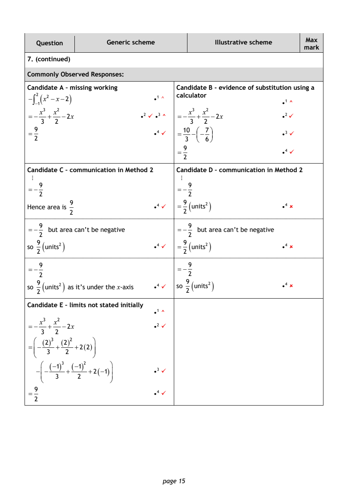
Selectable page text
Max
Question Generic scheme Illustrative scheme
mark
7. (continued)
Commonly Observed Responses:
Candidate A – missing working Candidate B - evidence of substitution using a
2( ) calculator
−∫ x² −x−2 •1 ^
•1 ^
−1
x³ x² x³ x²
=− + −2x •2 ✓ •3 ^ =− + −2x •2 ✓
3 2 3 2
9 10 7
= •4 ✓ = −− •3 ✓
2 3 6
9
= •4 ✓
2
Candidate C – communication in Method 2 Candidate D – communication in Method 2
⋮ ⋮
9 9
=− =−
2 2
9 9 ( )
Hence area is •4 ✓ = units² •4
2 2
9 9
=− but area can’t be negative =− but area can’t be negative
2 2
9 ( ) 9 ( )
so units² •4 ✓ = units² •4
2 2
9 9
=− =−
2 2
so 9 ( units² ) as it’s under the x-axis •4 ✓ so 9 ( units² ) •4
2 2
Candidate E – limits not stated initially
•1 ^
x³ x²
=− + −2x •2 ✓
3 2
(2)³ (2)²
=− + +2(2)
3 2
(−1)³ (−1)²
−− + +2(−1) •3 ✓
3 2
9
= •4 ✓
2
page 15PDF page 16
Paper 2, Question 8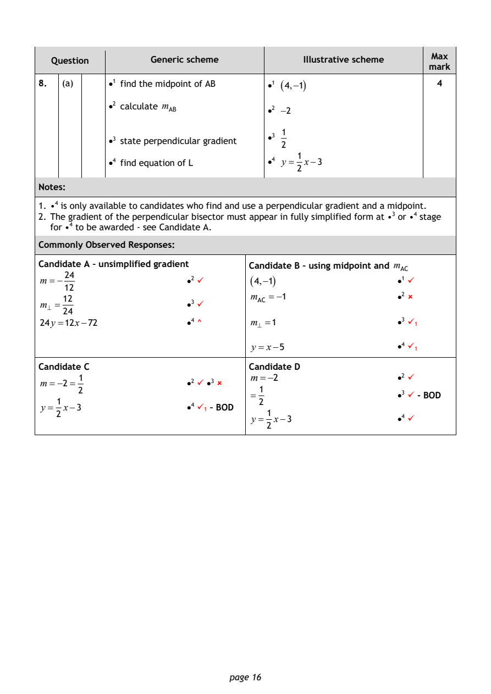
Selectable page text
Max
Question Generic scheme Illustrative scheme
mark
8. (a) •1 find the midpoint of AB •1 (4,−1) 4
•2 calculate m_{A}_{B}
•2 −2
1
•3 state perpendicular gradient
•3
2
1
•4 find equation of L •4 y = x−3
2
Notes:
1. •⁴ is only available to candidates who find and use a perpendicular gradient and a midpoint.
2. The gradient of the perpendicular bisector must appear in fully simplified form at •³ or •⁴ stage
for •⁴ to be awarded - see Candidate A.
Commonly Observed Responses:
Candidate A – unsimplified gradient Candidate B – using midpoint and m_{A}_{C}
24
m=− •2 ✓ (4,−1) •1 ✓
12
12 m_{A}_{C} =−1 •2
m_{⊥} = •3 ✓
24
24y=12x−72 •4 ^ m_{⊥} =1 •3 ✓
1
y = x−5 •4 ✓
1
Candidate C Candidate D
1 m=−2 •2 ✓
m=−2= •2 ✓ •3
2 1
= •3 ✓ - BOD
1 2
y = x−3 •4 ✓ – BOD
2 1 1
y = x−3 •4 ✓
2
page 16PDF page 17
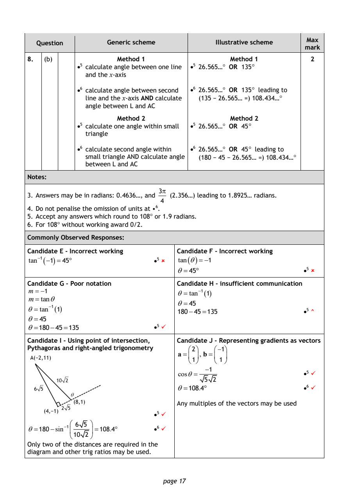
Selectable page text
Max
Question Generic scheme Illustrative scheme
mark
8. (b) Method 1 Method 1 2
•5 calculate angle between one line •5 26.565…° OR 135°
and the x-axis
•6 calculate angle between second •6 26.565…° OR 135° leading to
line and the x-axis AND calculate (135 − 26.565… =) 108.434…°
angle between L and AC
Method 2 Method 2
•5 calculate one angle within small •5 26.565…° OR 45°
triangle
•6 calculate second angle within •6 26.565…° OR 45° leading to
small triangle AND calculate angle (180 − 45 − 26.565… =) 108.434…°
between L and AC
Notes:
3π
3. Answers may be in radians: 0.4636…, and (2.356…) leading to 1.8925… radians.
4
4. Do not penalise the omission of units at •⁶.
5. Accept any answers which round to 108° or 1.9 radians.
6. For 108° without working award 0/2.
Commonly Observed Responses:
Candidate E - Incorrect working Candidate F - Incorrect working
tan⁻¹(−1)=45° •5 tan(θ)=−1
θ=45° •5
Candidate G - Poor notation Candidate H - insufficient communication
m=−1 θ=tan⁻¹(1)
m=tanθ
θ=45
θ=tan⁻¹(1)
180−45=135 •5 ^
θ=45
θ=180−45=135 •5 ✓
Candidate I - Using point of intersection, Candidate J - Representing gradients as vectors
Pythagoras and right-angled trigonometry 2 −1
a=
, b=
1 1
−1
cosθ= •5 ✓
5 2
θ=108.4° •6 ✓
Any multiples of the vectors may be used
•5 ✓
6 5
θ=180−sin⁻¹ =108.4° •6 ✓
10 2
Only two of the distances are required in the
diagram and other trig ratios may be used.
page 17PDF page 18
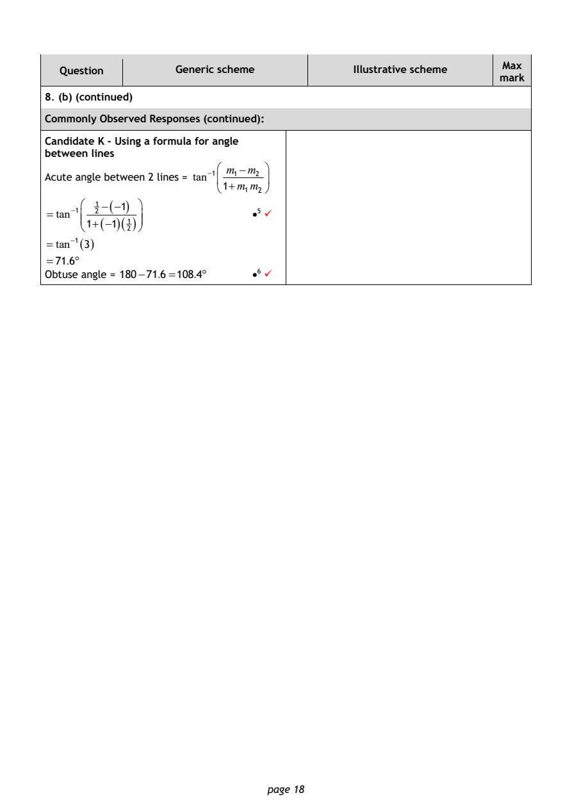
Selectable page text
Max
Question Generic scheme Illustrative scheme
mark
8. (b) (continued)
Commonly Observed Responses (continued):
Candidate K - Using a formula for angle
between lines
m₁−m₂
Acute angle between 2 lines = tan⁻¹
1+m₁m₂
1−(−1)
=tan⁻¹ 2 •5 ✓
1+(−1)(
₂¹
)
=tan⁻¹(3)
=71.6°
Obtuse angle = 180−71.6=108.4° •6 ✓
page 18PDF page 19
Paper 2, Question 9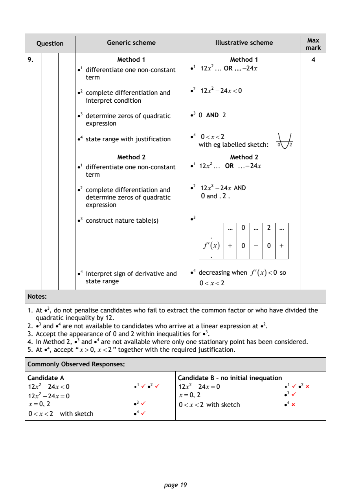
Selectable page text
Max
Question Generic scheme Illustrative scheme
mark
9. Method 1 Method 1 4
•1 differentiate one non-constant •1 12x²... OR ...−24x
term
•2 complete differentiation and •2 12x² −24x<0
interpret condition
•3 determine zeros of quadratic •3 0 AND 2
expression
•4 state range with justification •4 0<x<2
with eg labelled sketch:
Method 2 Method 2
•1 differentiate one non-constant •1 12x²… OR …−24x
term
•2 complete differentiation and •2 12x² −24x AND
determine zeros of quadratic 0 and .2 .
expression
•3 construct nature table(s) •3
… 0 … 2 …
.
f′(x) + 0 − 0 +
.
•4 interpret sign of derivative and •4 decreasing when f′(x)<0 so
state range 0< x<2
Notes:
1. At •³, do not penalise candidates who fail to extract the common factor or who have divided the
quadratic inequality by 12.
2. •³ and •⁴ are not available to candidates who arrive at a linear expression at •².
3. Accept the appearance of 0 and 2 within inequalities for •³.
4. In Method 2, •³ and •⁴ are not available where only one stationary point has been considered.
5. At •⁴, accept “x>0, x<2” together with the required justification.
Commonly Observed Responses:
Candidate A Candidate B – no initial inequation
12x² −24x<0 •1 ✓ •2 ✓ 12x² −24x=0 •1 ✓ •2
12x² −24x=0 x=0, 2 •3 ✓
x=0, 2 •3 ✓ 0< x<2 with sketch •4
0< x<2 with sketch •4 ✓
page 19PDF page 20
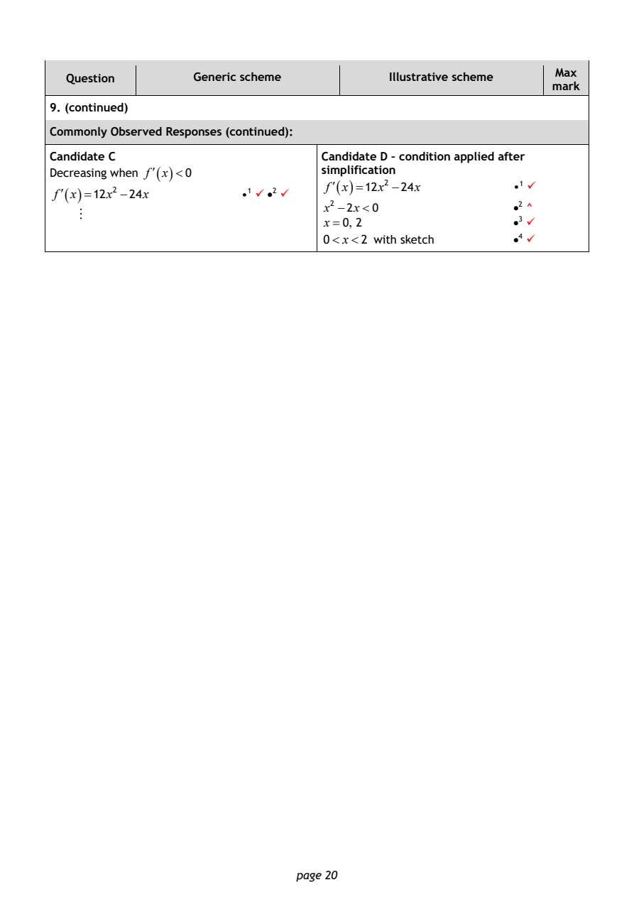
Selectable page text
Max
Question Generic scheme Illustrative scheme
mark
9. (continued)
Commonly Observed Responses (continued):
Candidate C Candidate D – condition applied after
Decreasing when f′(x)<0 simplification
f′(x)=12x² −24x •1 ✓
f′(x)=12x² −24x •1 ✓ •2 ✓
x² −2x<0 •2 ^
x=0, 2 •3 ✓
0< x<2 with sketch •4 ✓
page 20PDF page 21
Paper 2, Question 10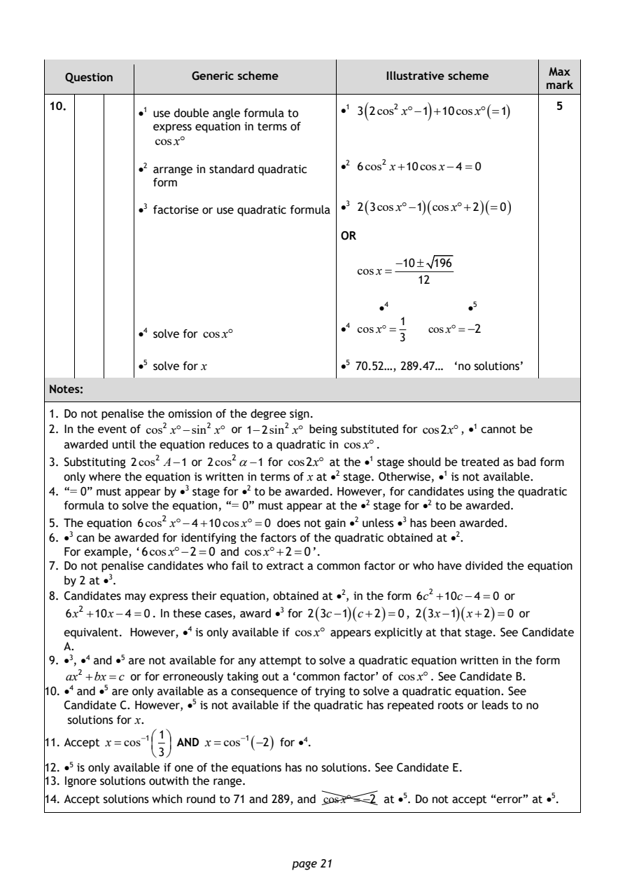
Selectable page text
Max
Question Generic scheme Illustrative scheme
mark
10. •1 use double angle formula to •1 3 ( 2cos² x°−1 ) +10cosx°(=1) 5
express equation in terms of
cosx°
•2 arrange in standard quadratic •2 6cos² x+10cosx−4=0
form
•3 factorise or use quadratic formula •³ 2(3cosx°−1)(cosx°+2)(=0)
OR
−10± 196
cosx=
12
•4 •5
1
•4 solve for cosx°
•4 cosx°= cosx°=−2
3
•5 solve for x •5 70.52…, 289.47… ‘no solutions’
Notes:
1. Do not penalise the omission of the degree sign.
2. In the event of cos² x°−sin² x° or 1−2sin² x° being substituted for cos2x°, •¹ cannot be
awarded until the equation reduces to a quadratic in cosx°.
3. Substituting 2cos² A−1 or 2cos²α−1 for cos2x° at the •¹ stage should be treated as bad form
only where the equation is written in terms of x at •² stage. Otherwise, •¹ is not available.
4. “= 0” must appear by •³ stage for •² to be awarded. However, for candidates using the quadratic
formula to solve the equation, “= 0” must appear at the •² stage for •² to be awarded.
5. The equation 6cos² x°−4+10cosx°=0 does not gain •² unless •³ has been awarded.
6. •³ can be awarded for identifying the factors of the quadratic obtained at •².
For example, ‘6cosx°−2=0 and cosx°+2=0’.
7. Do not penalise candidates who fail to extract a common factor or who have divided the equation
by 2 at •³.
8. Candidates may express their equation, obtained at •², in the form 6c² +10c−4=0 or
6x² +10x−4=0. In these cases, award •³ for 2(3c−1)(c+2)=0, 2(3x−1)(x+2)=0 or
equivalent. However, •⁴ is only available if cosx° appears explicitly at that stage. See Candidate
A.
9. •³, •4 and •⁵ are not available for any attempt to solve a quadratic equation written in the form
ax² +bx=c or for erroneously taking out a ‘common factor’ of cosx°. See Candidate B.
10. •⁴ and •⁵ are only available as a consequence of trying to solve a quadratic equation. See
Candidate C. However, •⁵ is not available if the quadratic has repeated roots or leads to no
solutions for x.
1
11. Accept x=cos⁻¹ AND x=cos⁻¹(−2) for •⁴.
3
12. •⁵ is only available if one of the equations has no solutions. See Candidate E.
13. Ignore solutions outwith the range.
14. Accept solutions which round to 71 and 289, and cosx°=−2 at •⁵. Do not accept “error” at •⁵.
page 21PDF page 22
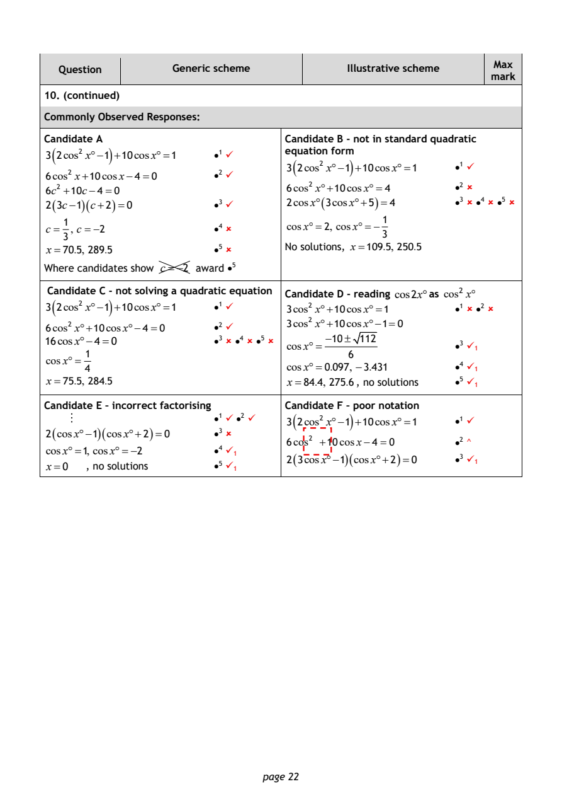
Selectable page text
Max
Question Generic scheme Illustrative scheme
mark
10. (continued)
Commonly Observed Responses:
Candidate A Candidate B - not in standard quadratic
( ) equation form
3 2cos² x°−1 +10cosx°=1 •1 ✓
( )
3 2cos² x°−1 +10cosx°=1 •1 ✓
6cos² x+10cosx−4=0 •2 ✓
6c² +10c−4=0 6cos² x°+10cosx°=4 •2
2(3c−1)(c+2)=0 •3 ✓ 2cosx°(3cosx°+5)=4 •3 •4 •5
1 1
c = , c =−2 •4 cosx°=2, cosx°=−
3 3
x=70.5, 289.5 •5 No solutions, x=109.5, 250.5
Where candidates show c=−2 award •⁵
Candidate C - not solving a quadratic equation Candidate D - reading cos2x°as cos² x°
( )
3 2cos² x°−1 +10cosx°=1 •1 ✓ 3cos² x°+10cosx°=1 •1 •2
6cos² x°+10cosx°−4=0 •2 ✓
3cos² x°+10cosx°−1=0
16cosx°−4=0 •3 •4 •5 −10± 112
cosx°= •3 ✓
1
1 6
cosx°=
4 cosx°=0.097, −3.431 •4 ✓ 1
x=75.5, 284.5 x=84.4, 275.6, no solutions •5 ✓
1
Candidate E – incorrect factorising Candidate F – poor notation
•1 ✓ •2 ✓ 3 ( 2cos² x°−1 ) +10cosx°=1 •1 ✓
2(cosx°−1)(cosx°+2)=0 •3
6cos² +10cosx−4 =0 •2 ^
cosx°=1, cosx°=−2 •4 ✓
1 2(3cosx°−1)(cosx°+2)=0 •3 ✓
x=0 , no solutions •5 ✓ 1
1
page 22PDF page 23
Paper 2, Question 11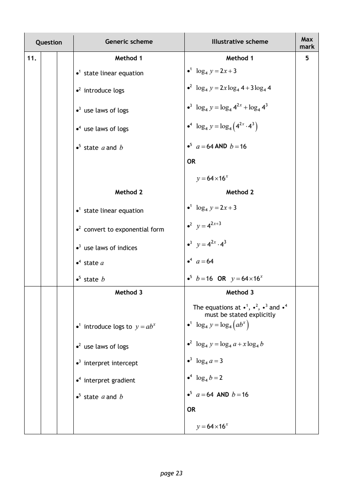
Selectable page text
Max
Question Generic scheme Illustrative scheme
mark
11. Method 1 Method 1 5
•1 state linear equation
•1 log₄ y =2x+3
•2 log₄ y =2xlog₄ 4+3log₄ 4
•2 introduce logs
•3 log₄ y=log₄ 4²^{x} +log₄ 4³
•3 use laws of logs
( )
•4 log₄ y=log₄ 4²^{x}⋅4³
•4 use laws of logs
•5 state aand b •5 a=64AND b=16
OR
y=64×16^{x}
Method 2 Method 2
•1 log₄ y =2x+3
•1 state linear equation
•2 y=4²^{x}⁺³
•2 convert to exponential form
•3 y =4²^{x}⋅4³
•3 use laws of indices
•4 state a •4 a=64
•5 state b •5 b=16 OR y=64×16^{x}
Method 3 Method 3
The equations at •¹, •2, •3 and •⁴
must be stated explicitly
( )
•1 introduce logs to y=ab^{x} •1 log₄ y=log₄ ab^{x}
•2 log₄ y =log₄ a+xlog₄b
•2 use laws of logs
•3 interpret intercept •3 log₄ a=3
•4 interpret gradient
•4 log₄b=2
•5 state aand b •5 a=64 AND b=16
OR
y=64×16^{x}
page 23PDF page 24
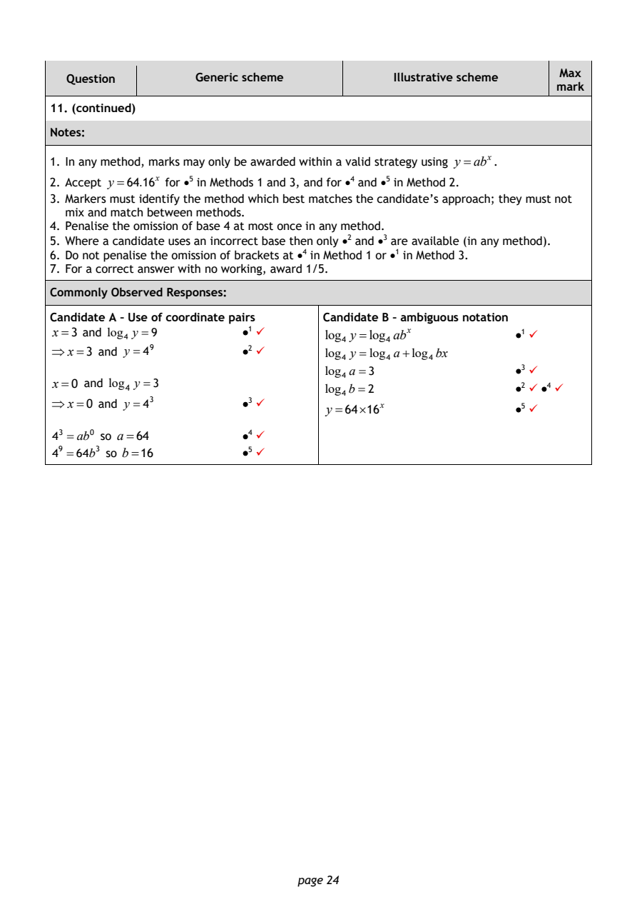
Selectable page text
Max
Question Generic scheme Illustrative scheme
mark
11. (continued)
Notes:
1. In any method, marks may only be awarded within a valid strategy using y=ab^{x}.
2. Accept y=64.16^{x} for •⁵ in Methods 1 and 3, and for •⁴ and •⁵ in Method 2.
3. Markers must identify the method which best matches the candidate’s approach; they must not
mix and match between methods.
4. Penalise the omission of base 4 at most once in any method.
5. Where a candidate uses an incorrect base then only •² and •³ are available (in any method).
6. Do not penalise the omission of brackets at •⁴ in Method 1 or •¹ in Method 3.
7. For a correct answer with no working, award 1/5.
Commonly Observed Responses:
Candidate A – Use of coordinate pairs Candidate B – ambiguous notation
x=3 and log₄ y =9 •1 ✓ log₄ y=log₄ab^{x} •1 ✓
⇒x=3 and y =4⁹ •2 ✓ log₄ y =log₄ a+log₄bx
log₄ a=3 •3 ✓
x=0 and log₄ y =3
log₄b=2 •2 ✓ •4 ✓
⇒x=0 and y =4³ •3 ✓
y=64×16^{x} •5 ✓
4³ =ab⁰ so a=64 •4 ✓
4⁹ =64b³ so b=16 •5 ✓
page 24PDF page 25
Paper 2, Question 12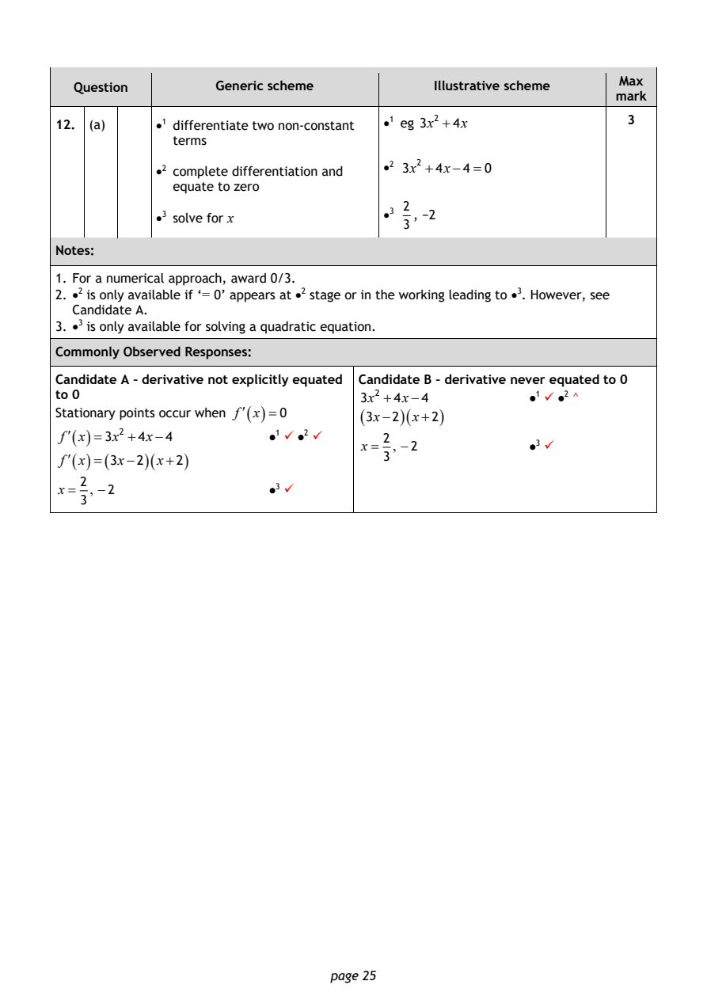
Selectable page text
Max
Question Generic scheme Illustrative scheme
mark
12. (a) •1 differentiate two non-constant •1 eg 3x² +4x 3
terms
•2 complete differentiation and •2 3x² +4x−4=0
equate to zero
2
•3 solve for x •3 , −2
3
Notes:
1. For a numerical approach, award 0/3.
2. •² is only available if ‘= 0’ appears at •² stage or in the working leading to •³. However, see
Candidate A.
3. •³ is only available for solving a quadratic equation.
Commonly Observed Responses:
Candidate A – derivative not explicitly equated Candidate B – derivative never equated to 0
to 0 3x² +4x−4 •1 ✓ •2 ^
Stationary points occur when f′(x)=0 (3x−2)(x+2)
f′(x)=3x² +4x−4 •1 ✓ •2 ✓ 2
x= , −2 •3 ✓
f′(x)=(3x−2)(x+2) 3
2
x= , −2 •3 ✓
3
page 25PDF page 26
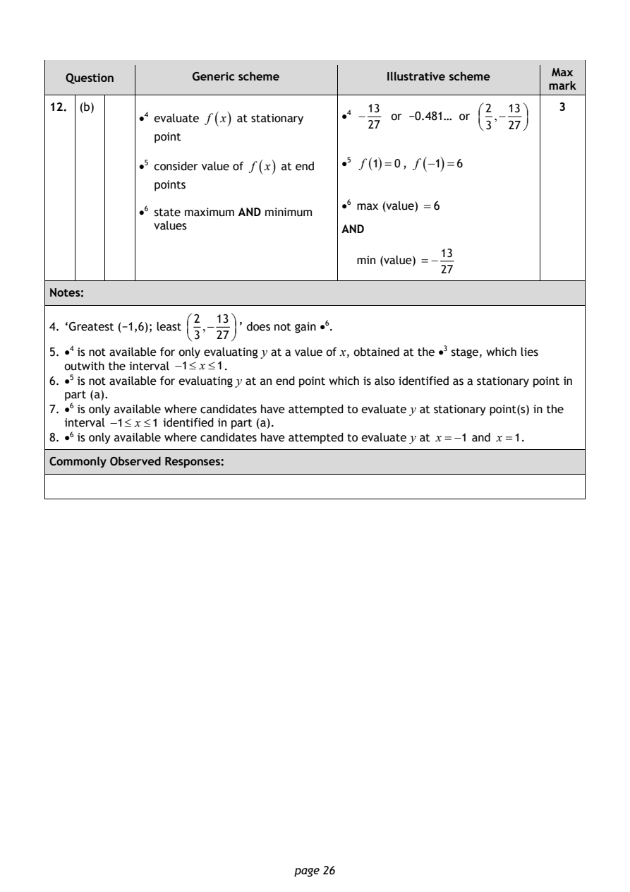
Selectable page text
Max
Question Generic scheme Illustrative scheme
mark
12. (b) 13 2 13 3
•4 evaluate f (x) at stationary •4 − or −0.481… or ,−
27 3 27
point
•5 consider value of f (x) at end •5 f (1)=0, f (−1)=6
points
•6 max (value) =6
•6 state maximum AND minimum
values
AND
13
min (value) =−
27
Notes:
2 13
4. ‘Greatest (−1,6); least ,− ’ does not gain •⁶.
3 27
5. •⁴ is not available for only evaluating y at a value of x, obtained at the •³ stage, which lies
outwith the interval −1≤ x≤1.
6. •⁵ is not available for evaluating y at an end point which is also identified as a stationary point in
part (a).
7. •⁶ is only available where candidates have attempted to evaluate y at stationary point(s) in the
interval −1≤ x≤1 identified in part (a).
8. •⁶ is only available where candidates have attempted to evaluate y at x=−1 and x =1.
Commonly Observed Responses:
page 26PDF page 27
Paper 2, Question 13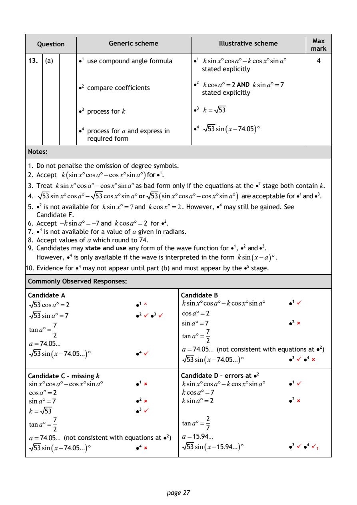
Selectable page text
Max
Question Generic scheme Illustrative scheme
mark
13. (a) •1 use compound angle formula •1 ksinx°cosa°−kcosx°sina° 4
stated explicitly
•2 kcosa°=2AND ksina°=7
•2 compare coefficients
stated explicitly
•3 process for k •3 k = 53
•4 process for a and express in
•4 53sin(x−74.05)°
required form
Notes:
1. Do not penalise the omission of degree symbols.
2. Accept k(sinx°cosa°−cosx°sina°)for •¹.
3. Treat ksinx°cosa°−cosx°sina°as bad form only if the equations at the •² stage both contain k.
4. 53sinx°cosa°− 53cosx°sina°or 53(sinx°cosa°−cosx°sina°) are acceptable for •¹ and •³.
5. •² is not available for ksinx°=7and kcosx°=2. However, •⁴ may still be gained. See
Candidate F.
6. Accept −ksina°=−7and kcosa°=2 for •².
7. •⁴ is not available for a value of a given in radians.
8. Accept values of a which round to 74.
9. Candidates may state and use any form of the wave function for •¹, •2 and •³.
However, •⁴ is only available if the wave is interpreted in the form ksin(x−a)°.
10. Evidence for •⁴ may not appear until part (b) and must appear by the •⁵ stage.
Commonly Observed Responses:
Candidate A Candidate B
53cosa°=2 •1 ^ ksinx°cosa°−kcosx°sina° •1 ✓
53sina°=7 •2 ✓ •3 ✓
cosa°=2
7 sina°=7 •2
tana°=
7
2 tana°=
2
a=74.05...
a=74.05... (not consistent with equations at •²)
53sin(x−74.05...)° •4 ✓
53sin(x−74.05...)° •3 ✓ •4
Candidate C – missing k Candidate D – errors at •²
sinx°cosa°−cosx°sina° •1 ksinx°cosa°−kcosx°sina° •1 ✓
cosa°=2 kcosa°=7
sina°=7 •2 ksina°=2 •2
k = 53 •3 ✓
7 2
tana°= tana°=
2 7
a=74.05... (not consistent with equations at •²) a=15.94...
53sin(x−74.05...)° •4 53sin(x−15.94...)° •3 ✓ •4 ✓ 1
page 27PDF page 28
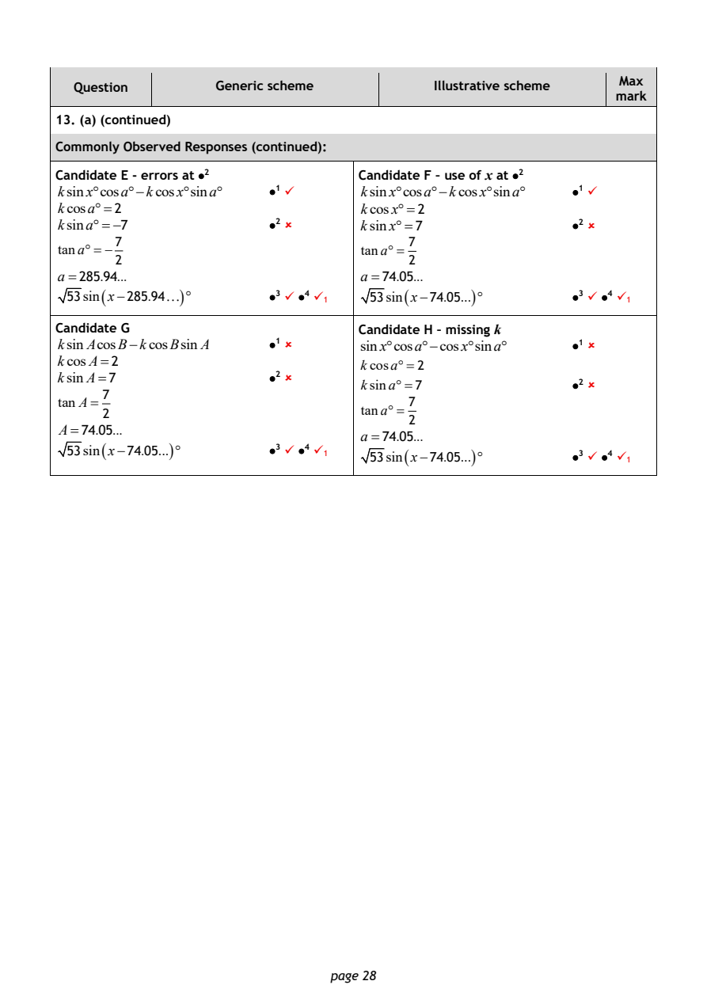
Selectable page text
Max
Question Generic scheme Illustrative scheme
mark
13. (a) (continued)
Commonly Observed Responses (continued):
Candidate E - errors at •² Candidate F – use of x at •²
ksinx°cosa°−kcosx°sina° •1 ✓ ksinx°cosa°−kcosx°sina° •1 ✓
kcosa°=2 kcosx°=2
ksina°=−7 •2 ksinx°=7 •2
7 7
tana°=− tana°=
2 2
a=285.94... a=74.05...
53sin(x−285.94…)° •3 ✓ •4 ✓ 53sin(x−74.05...)° •3 ✓ •4 ✓
1 1
Candidate G Candidate H – missing k
ksinAcosB−kcosBsinA •1 sinx°cosa°−cosx°sina° •1
kcosA=2
kcosa°=2
ksinA=7 •2
ksina°=7 •2
7
tanA= 7
tana°=
2
2
A=74.05...
a=74.05...
53sin(x−74.05...)° •3 ✓ •4 ✓ 1 53sin(x−74.05...)° •3 ✓ •4 ✓
1
page 28PDF page 29
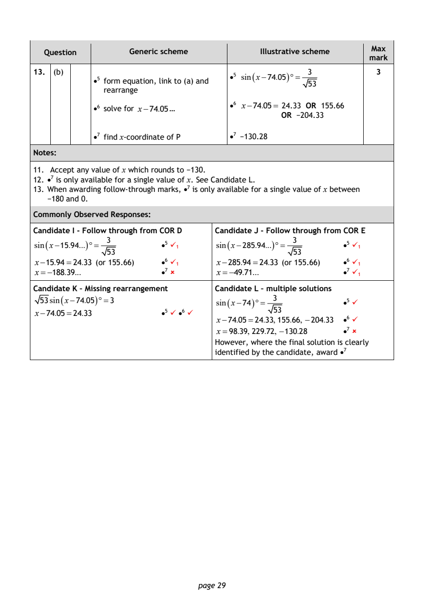
Selectable page text
Max
Question Generic scheme Illustrative scheme
mark
13. (b) 3 3
•5 sin(x−74.05)°=
•5 form equation, link to (a) and
53
rearrange
•6 x−74.05= 24.33 OR 155.66
•6 solve for x−74.05…
OR −204.33
•7 find x-coordinate of P •7 −130.28
Notes:
11. Accept any value of x which rounds to −130.
12. •⁷ is only available for a single value of x. See Candidate L.
13. When awarding follow-through marks, •⁷ is only available for a single value of x between
−180 and 0.
Commonly Observed Responses:
Candidate I - Follow through from COR D Candidate J - Follow through from COR E
3 3
sin(x−15.94...)°= •5 ✓ sin(x−285.94...)°= •5 ✓
1 1
53 53
x−15.94=24.33 (or 155.66) •6 ✓ x−285.94=24.33 (or 155.66) •6 ✓
1 1
x=−188.39... •7 x=−49.71... •7 ✓
1
Candidate K – Missing rearrangement Candidate L – multiple solutions
53sin(x−74.05)°=3
sin(x−74)°=
3
•5 ✓
53
x−74.05=24.33 •5 ✓ •6 ✓
x−74.05=24.33,155.66, −204.33 •6 ✓
x=98.39, 229.72, −130.28 •7
However, where the final solution is clearly
identified by the candidate, award •⁷
page 29PDF page 30
Paper 2, Question 14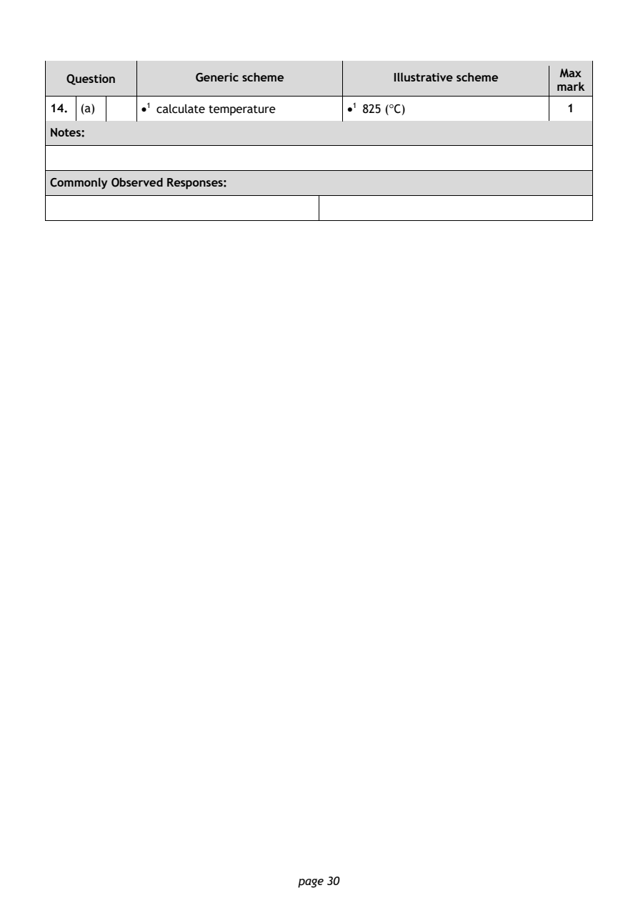
Selectable page text
Max
Question Generic scheme Illustrative scheme
mark
14. (a) •1 calculate temperature •1 825 (°C) 1
Notes:
Commonly Observed Responses:
page 30PDF page 31
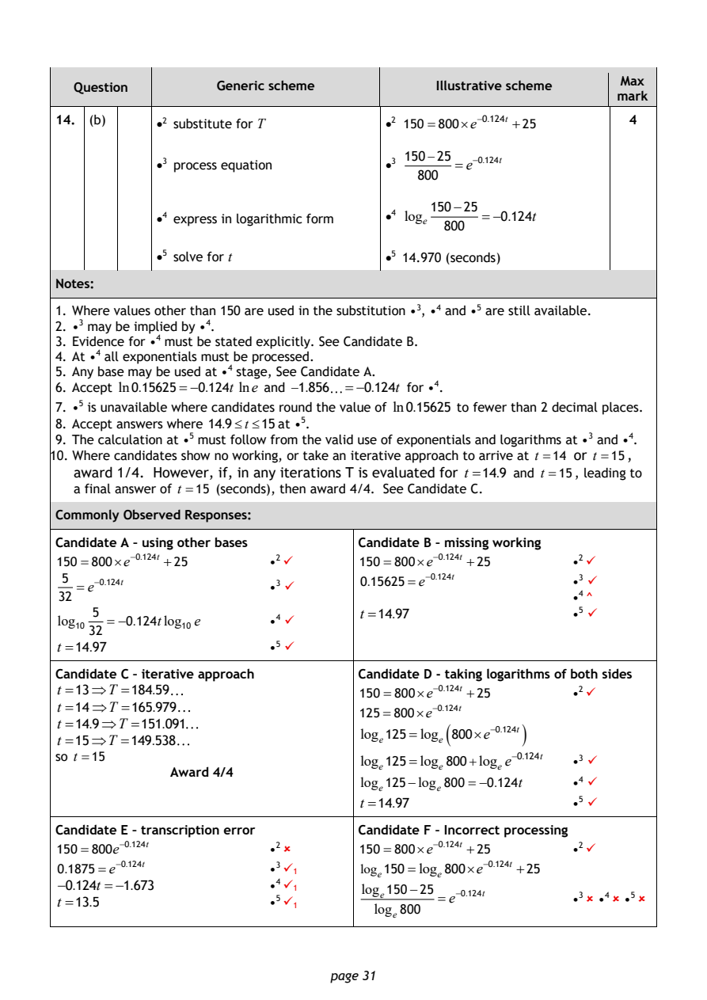
Selectable page text
Max
Question Generic scheme Illustrative scheme
mark
14. (b) •2 substitute for T •2 150=800×e⁻⁰^{.}¹²4t +25 4
150−25
•3 process equation •3 =e⁻⁰^{.}¹²⁴t
800
150−25
•4 express in logarithmic form •4 logₑ =−0.124t
800
•5 solve for t •5 14.970 (seconds)
Notes:
1. Where values other than 150 are used in the substitution •³, •4 and •⁵ are still available.
2. •³ may be implied by •⁴.
3. Evidence for •⁴ must be stated explicitly. See Candidate B.
4. At •⁴ all exponentials must be processed.
5. Any base may be used at •⁴ stage, See Candidate A.
6. Accept ln0.15625=−0.124t lne and −1.856 =−0.124t for •⁴.
7. •⁵ is unavailable where candidates round the value of ln0.15625 to fewer than 2 decimal places.
8. Accept answers where 14.9≤t ≤15at •⁵.
9. The calculation at •⁵ must follow from the valid use of exponentials and logarithms at •³ and •⁴.
10. Where candidates show no working, or take an iterative approach to arrive at t =14 or t =15,
award 1/4. However, if, in any iterations T is evaluated for t =14.9 and t =15, leading to
a final answer of t =15 (seconds), then award 4/4. See Candidate C.
Commonly Observed Responses:
Candidate A – using other bases Candidate B – missing working
150=800×e⁻⁰^{.}¹²⁴t +25 •2 ✓ 150=800×e⁻⁰^{.}¹²⁴t +25 •2 ✓
5 =e⁻⁰^{.}¹²⁴t •3 ✓ 0.15625=e⁻⁰^{.}¹²⁴t •3 ✓
32 •4 ^
5 t =14.97 •5 ✓
log₁₀ =−0.124tlog₁₀e •4 ✓
32
t =14.97 •5 ✓
Candidate C – iterative approach Candidate D - taking logarithms of both sides
t =13⇒T =184.59 150=800×e⁻⁰^{.}¹²⁴t +25 •2 ✓
t =14⇒T =165.979
125=800×e⁻⁰^{.}¹²⁴t
t =14.9⇒T =151.091
logₑ125=logₑ
( 800×e⁻⁰^{.}¹²⁴t)
t =15⇒T =149.538
so t =15 logₑ125=logₑ800+logₑe⁻⁰^{.}¹²⁴t •3 ✓
Award 4/4
logₑ125−logₑ800=−0.124t •4 ✓
t =14.97 •5 ✓
Candidate E – transcription error Candidate F – Incorrect processing
150=800e⁻⁰^{.}¹²⁴t •2 150=800×e⁻⁰^{.}¹²⁴t +25 •2 ✓
0.1875=e⁻⁰^{.}¹²⁴t •3 ✓ logₑ150=logₑ800×e⁻⁰^{.}¹²⁴t +25
1
−0.124t =−1.673 •4 ✓ 1 logₑ150−25
t =13.5 •5 ✓ =e⁻⁰^{.}¹²⁴t •3 •4 •5
1 logₑ800
page 31PDF page 32
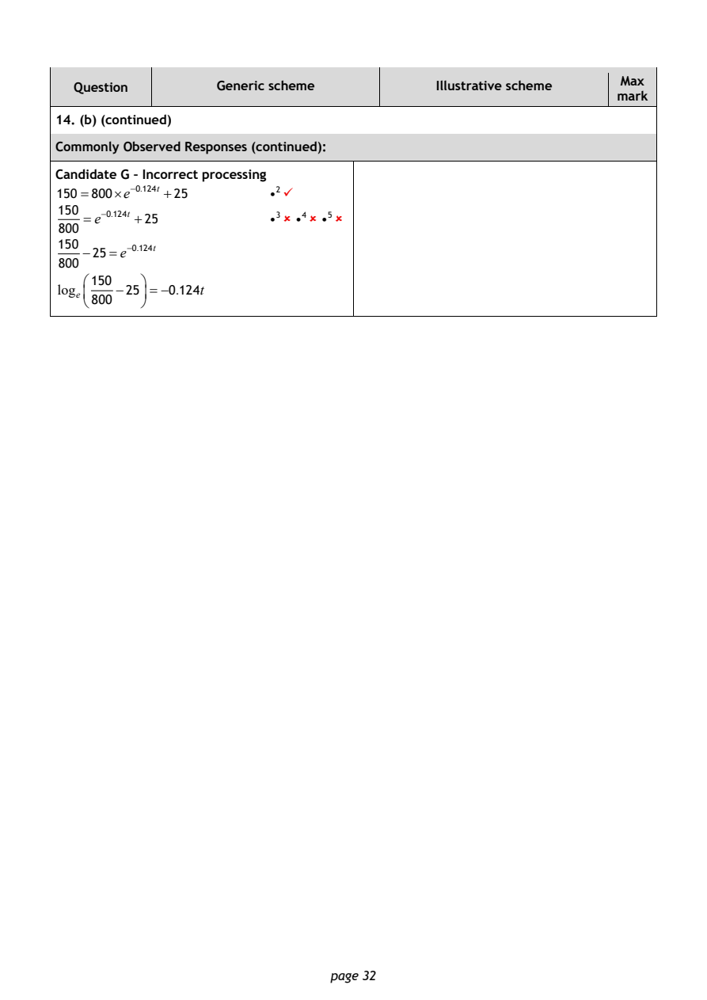
Selectable page text
Max
Question Generic scheme Illustrative scheme
mark
14. (b) (continued)
Commonly Observed Responses (continued):
Candidate G – Incorrect processing
150=800×e⁻⁰^{.}¹²⁴t +25 •2 ✓
150
=e⁻⁰^{.}¹²⁴t +25 •3 •4 •5
800
150
−25=e⁻⁰^{.}¹²⁴t
800
150
logₑ
−25 =−0.124t
800
page 32PDF page 33
Paper 2, Question 15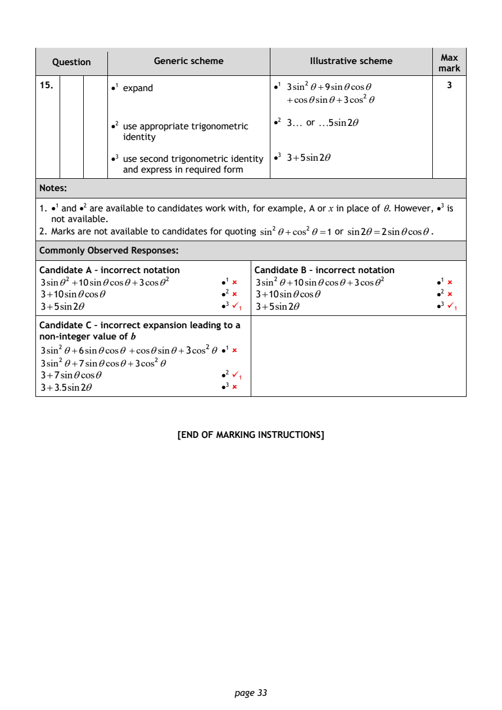
Selectable page text
Max
Question Generic scheme Illustrative scheme
mark
15. •1 expand •1 3sin²θ+9sinθcosθ 3
+cosθsinθ+3cos²θ
•2 use appropriate trigonometric
•2 3… or …5sin2θ
identity
•3 use second trigonometric identity •³ 3+5sin2θ
and express in required form
Notes:
1. •¹ and •² are available to candidates work with, for example, A or x in place of θ. However, •³ is
not available.
2. Marks are not available to candidates for quoting sin²θ+cos²θ=1 or sin2θ=2sinθcosθ.
Commonly Observed Responses:
Candidate A – incorrect notation Candidate B – incorrect notation
3sinθ² +10sinθcosθ+3cosθ² •1 3sin²θ+10sinθcosθ+3cosθ² •1
3+10sinθcosθ •2 3+10sinθcosθ •2
3+5sin2θ •3 ✓ 3+5sin2θ •3 ✓
1 1
Candidate C – incorrect expansion leading to a
non-integer value of b
3sin²θ+6sinθcosθ+cosθsinθ+3cos²θ •¹
3sin²θ+7sinθcosθ+3cos²θ
3+7sinθcosθ •2 ✓
1
3+3.5sin2θ •3
[END OF MARKING INSTRUCTIONS]
page 33